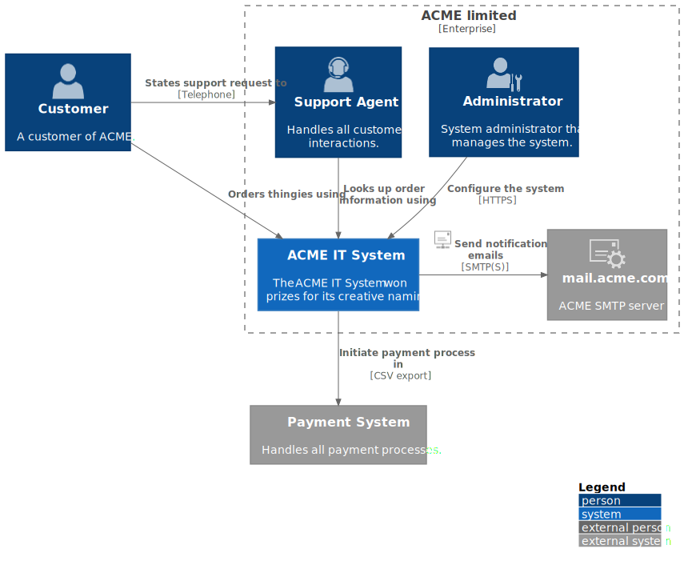

The scope of this page is the ACME Product - System Level (system) in version 0.9.0.
Contents
System scope and context - as the name suggests - delimits your system (i.e. your scope) from all its communication partners
(neighboring systems and users, i.e. the context of your system). It thereby specifies the external interfaces.
If necessary, differentiate the business context (domain specific inputs and outputs) from the technical context (channels, protocols, hardware).
Motivation
The domain interfaces and technical interfaces to communication partners are among your system’s most critical aspects. Make sure that you completely understand them.
Form
Various options:
Context diagrams
Lists of communication partners and their interfaces.
Business Context
Contents
Specification of all communication partners (users, IT-systems, …) with explanations of domain specific inputs and outputs or interfaces.
Optionally you can add domain specific formats or communication protocols.
Motivation
All stakeholders should understand which data are exchanged with the environment of the system.
Form
All kinds of diagrams that show the system as a black box and specify the domain interfaces to communication partners.
Alternatively (or additionally) you can use a table.
The title of the table is the name of your system, the three columns contain the name of the communication partner, the inputs, and the outputs.

Figure 1. C4 Context Diagram of the whole system
<Diagram or Table>
<optionally: Explanation of external domain interfaces>
Technical Context
Contents
Technical interfaces (channels and transmission media) linking your system to its environment. In addition a mapping of domain specific input/output to the channels, i.e. an explanation with I/O uses which channel.
Motivation
Many stakeholders make architectural decision based on the technical interfaces between the system and its context. Especially infrastructure or hardware designers decide these technical interfaces.
Form
E.g. UML deployment diagram describing channels to neighboring systems,
together with a mapping table showing the relationships between channels and input/output.